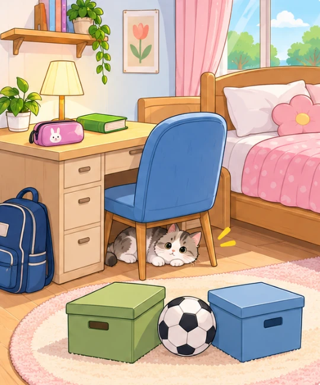

Unit 2: My House
Grammar
Possessive case & prepositions of place. Đọc lý thuyết, làm Possessive forms rồi chuyển sang Prepositions nhé.
📘 Lý thuyết — bấm để ẩn / hiện
1. Sở hữu cách (Possessive case)
Dùng khi: nói vật / người nào đó của ai.
- Danh từ số ít → thêm 's: Mai → Mai's mother, my sister → my sister's computer
- Danh từ số nhiều tận cùng -s → chỉ thêm ': my parents → my parents' bedroom
- Danh từ số nhiều không tận cùng -s → thêm 's: children → the children's toys
Lỗi hay gặp: the mother of Mai → Mai's mother (người sở hữu đứng trước, có 's).
2. Giới từ chỉ nơi chốn (Prepositions of place)
| Giới từ | Nghĩa | Ví dụ |
|---|---|---|
| in | ở trong | The cat is in the box. |
| on | ở trên (chạm mặt) | The book is on the desk. |
| under | ở dưới | The cat is under the chair. |
| behind | ở phía sau | The garden is behind the house. |
| in front of | ở phía trước | The chair is in front of the desk. |
| next to | ở bên cạnh | The book is next to the lamp. |
| between | ở giữa (hai vật) | The ball is between the two boxes. |
Complete the sentences with the correct possessive forms — viết dạng sở hữu cách của từ trong ngoặc.
Complete the dialogue with a suitable preposition of place — nhìn tranh, chọn giới từ đúng.

📘 Lý thuyết — bấm để ẩn / hiện
1. Sở hữu cách (Possessive case)
Dùng khi: nói vật / người nào đó của ai.
- Danh từ số ít → thêm 's: Mai → Mai's mother, my sister → my sister's computer
- Danh từ số nhiều tận cùng -s → chỉ thêm ': my parents → my parents' bedroom
- Danh từ số nhiều không tận cùng -s → thêm 's: children → the children's toys
Lỗi hay gặp: the mother of Mai → Mai's mother (người sở hữu đứng trước, có 's).
2. Giới từ chỉ nơi chốn (Prepositions of place)
| Giới từ | Nghĩa | Ví dụ |
|---|---|---|
| in | ở trong | The cat is in the box. |
| on | ở trên (chạm mặt) | The book is on the desk. |
| under | ở dưới | The cat is under the chair. |
| behind | ở phía sau | The garden is behind the house. |
| in front of | ở phía trước | The chair is in front of the desk. |
| next to | ở bên cạnh | The book is next to the lamp. |
| between | ở giữa (hai vật) | The ball is between the two boxes. |
Put the verbs in brackets in the correct form — chia động từ trong ngoặc.
Correct order — sắp xếp các từ / cụm từ thành câu hoàn chỉnh.